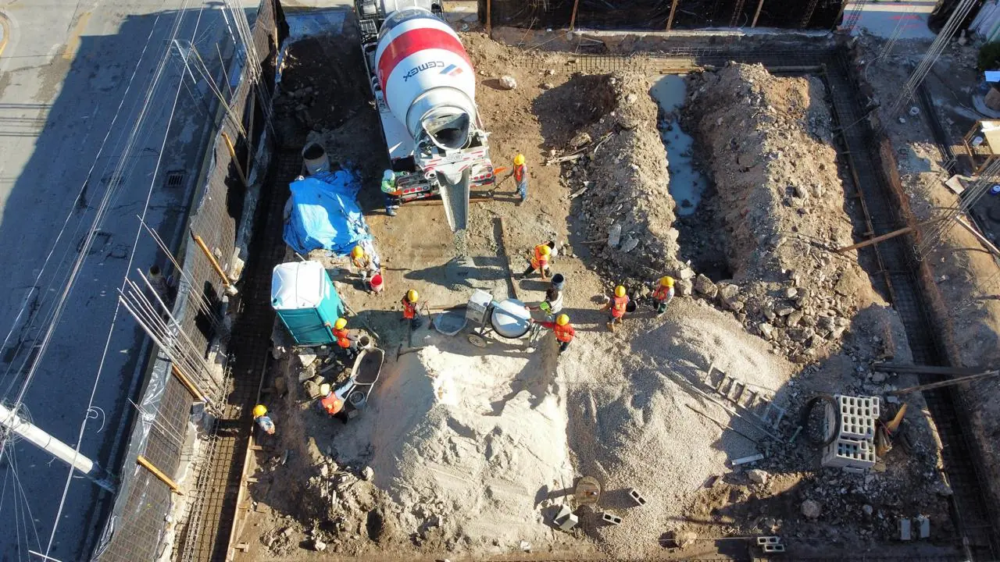

En buena parte de la Riviera Maya el pozo de absorción es justo lo que no debe construirse. Antes de dimensionar uno conviene saber por qué, y qué solución sí pasa el filtro ambiental.

Un pozo de absorción es una excavación que infiltra en el subsuelo el agua que recibe. Para agua de lluvia captada en azoteas y patios es una solución común y aceptada en muchos municipios. El problema empieza cuando se usa para aguas residuales, que es como todavía se resuelven muchas casas viejas del sureste.
La península de Yucatán es roca caliza fracturada: el agua que se infiltra llega rápido al acuífero, y el acuífero descarga en cenotes y en el mar, sobre el arrecife. Infiltrar aguas residuales sin tratar es contaminar el agua que después bebe y usa la zona. Por eso las autoridades ambientales de la región condicionan o rechazan proyectos que descargan sin tratamiento, y por eso conviene diseñar el drenaje antes de comprar el terreno, no después.
Para aguas residuales: biodigestor autolimpiable en casas unifamiliares, o planta de tratamiento compacta cuando el aforo lo justifica —hotel pequeño, varias viviendas, restaurante—. El efluente ya tratado puede reutilizarse en riego o infiltrarse según lo que autorice el permiso. Para agua pluvial: pozo de absorción bien dimensionado, con trampa de sólidos y separador de grasas si recibe escurrimiento de patios.
| Solución | Cuándo aplica | Rango de costo 2026 |
|---|---|---|
| Pozo de absorción pluvial | Agua de lluvia de azotea y patios | $18,000 – $45,000 MXN |
| Biodigestor autolimpiable | Casa unifamiliar, 5–10 usuarios | $25,000 – $60,000 MXN |
| Planta de tratamiento compacta | Hotel pequeño, varias viviendas, restaurante | $180,000 – $600,000 MXN |
| Trampa de grasas y sólidos | Cocinas y áreas de servicio | $8,000 – $25,000 MXN |
Un pozo pluvial se dimensiona con el área de captación, la intensidad de lluvia de diseño y la capacidad de infiltración del suelo. En la práctica regional se manejan diámetros de 1.00 a 1.50 m y profundidades que dependen del nivel del manto freático: nunca se busca alcanzarlo, sino quedarse por encima con margen. Los biodigestores se eligen por número de usuarios y aportación diaria; las plantas compactas, por metros cúbicos por día.
Distancia a cenotes, cuerpos de agua y pozos de abasto; profundidad respecto al manto freático; tratamiento previo a cualquier infiltración; y evidencia de mantenimiento. En zonas dentro o cerca de áreas naturales protegidas —Puerto Morelos, Akumal, Tulum— el expediente ambiental es el que fija el calendario de toda la obra, no la construcción.
Guías útiles: Plomería e instalaciones hidráulicas · Construcción de casas en la Riviera Maya · Permisos, licencias y DRO · Construir en la Ruta de los Cenotes
Donde sí está autorizado — aguas pluviales, o efluente ya tratado con permiso de descarga — el dimensionamiento parte de dos datos: el volumen a infiltrar y la capacidad de infiltración del terreno.
La prueba de percolación es el ensayo que da el segundo dato. Se excava un pozo de prueba a la profundidad prevista, se satura el terreno durante al menos cuatro horas, se llena con agua limpia y se mide cuántos minutos tarda en descender 2,5 cm. Ese valor, en minutos por centímetro, clasifica el suelo: por debajo de 1 min/cm el terreno infiltra demasiado rápido para filtrar nada — típico del karst fisurado de la región y una de las razones por las que aquí casi nunca se autoriza; por encima de 30 min/cm no infiltra lo suficiente y hay que buscar otra solución.
Para aguas pluviales, el volumen se calcula con la superficie de captación (techo más pavimentos), el coeficiente de escurrimiento y la intensidad de lluvia de diseño. En la Riviera Maya se trabaja con intensidades del orden de 60 a 100 mm por hora para tormentas de diseño, cifra que explica por qué los pozos subdimensionados se desbordan a la calle en el primer aguacero de junio.
Criterios geométricos habituales: diámetro de 1,0 a 2,5 m, profundidad que no alcance el nivel freático dejando un colchón mínimo de 2 m sobre él, paredes de mampostería con juntas abiertas o anillos perforados, relleno de grava lavada de 20 a 40 mm, y geotextil envolviendo el filtro para que no se colmate con finos.
Quien decide no es el constructor. Para cualquier infiltración al subsuelo, la competencia se reparte entre la CONAGUA — dueña de las aguas nacionales y del subsuelo —, la autoridad ambiental estatal o federal según la zona, y el municipio dentro de la licencia de construcción. Para aguas residuales se suma el cumplimiento de la NOM-001-SEMARNAT en la calidad del efluente antes de cualquier descarga.
El expediente que se pide habitualmente incluye la memoria de cálculo con la prueba de percolación, el plano del sistema con niveles y distancias, la distancia a pozos de agua, cenotes y colindancias, y el contrato de mantenimiento con quien vaya a retirar lodos. Guardar ese paquete no es burocracia: al vender la propiedad, el notario y el comprador lo revisan, y un sistema no documentado se convierte en descuento sobre el precio.
Un pozo de absorción no falla de golpe, se va cegando. Las causas, en orden de frecuencia:
Rutina razonable: revisar y limpiar el desarenador cada tres meses, inspeccionar el pozo antes de la temporada de lluvias y retirar lodos según el diseño. Con eso, un pozo bien dimensionado dura décadas; sin eso, dos o tres años.
En la mayor parte de la Riviera Maya la respuesta correcta no es el pozo. Las opciones que sí se autorizan, por orden de preferencia:
Para pluviales, en cambio, la infiltración sí es deseable: cisterna de captación, jardines de lluvia, pavimentos permeables y, como último tramo, el pozo correctamente dimensionado y filtrado.
196+ proyectos terminados. Contrato a precio fijo. Respuesta en 2 minutos.
Cotizar por WhatsAppSu opinión ayuda a otros propietarios a decidir, y a nosotros a mejorar.
Escribir una reseñaVer reseñas en Google